Funciones del objeto Math
La función Math.abs() retorna el valor absoluto de un número, que es
Sintaxis:
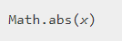Como abs() es un método estático de Math, deberías siempre usar Math.abs(), en lugar de un método de un objeto Math que crees (Math no es un constructor). Pasando un string no-numérico o una variable undefined/empty retorna NaN. Pasando null retorna 0.
Ejemplo:
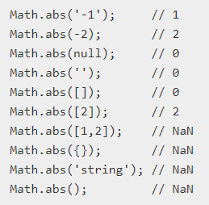Math.round()
La función Math.round() retorna el valor de un número redondeado al entero más cercano.
Sintaxis:
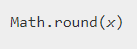Si la porción fraccionaría del número es 0.5 o mayor, el argumento es redondeado al siguiente número entero superior. Si la porción de la fracción del número es menor a 0.5, el argumento es redondeado al siguiente número entero inferior.
Debido a que round() es un método estático de Math, siempre se debe utilizar como Math.round(), en vez de un método del objeto Math que ha creado. (Math no es un constructor)
Ejemplo:
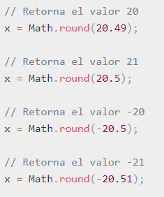Math.ceil()
La función Math.ceil() devuelve el entero mayor o igual más próximo a un número dado.
Sintaxis:
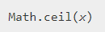Como ceil() es un método estático de Math, siempre debe usarlo como Math.ceil(), en lugar de como un método de un objeto que ha creado Math (Math no es un constructor).
Siempre retorna el número entero mayor o igual más próximo que el número dado.Ejemplo:
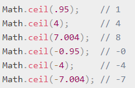Math.floor()
Devuelve el máximo entero menor o igual a un número.
Sintaxis:
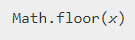Como floor es un método estático de Math, siempre debe usarse como Math.floor(), en lugar de usarlo como un método de un objeto Math creado.
Ejemplo:
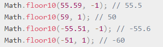Math.exp()
La función Math.exp() devuelve ex, donde x es el argumento, y e es El número de Euler (también conocido como la constante de Napier), la base de los algoritmos naturales.
Sintaxis:
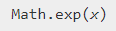Valor devuelto, un número represetando ex, donde e es número de Euler y x es el argumento. Porque exp() es un método estático de Math, siempre úsalo como Math.exp(), en vez de un método de un objeto Math que hayas creado (Math no es un constructor).
Ejemplo:
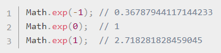Math.log()
La función Math.log() devuelve la base neutral de un número (base e)
Sintaxis:
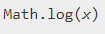Si el valor de x es negativo, el valor de retorno es siempre NaN. Debido a que log () es un método estático de Math, siempre lo usa como Math.log (), en lugar de como un método de un objeto Math que creó (Math no es un constructor). Si necesita el registro natural de 2 o 10, use las constantes Math.LN2 o Math.LN10. Si necesita un logaritmo para la base 2 o 10, use Math.log2 () o Math.log10 (). Si necesita un logaritmo para otras bases, use Math.log (x) / Math.log (otherBase) como en el siguiente ejemplo; es posible que desee calcular previamente 1 / Math.log (otherBase).
Ejemplo:
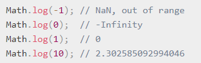Math.random()
La función Math.log() devuelve un numero aleatorio segun el parametro.
Sintaxis:
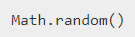La función Math.random() retorna un punto flotante, un número pseudo-aleatorio dentro del rango [0, 1). Esto es, desde el 0 (Incluido) hasta el 1 pero sin incluirlo (excluido), el cual se puede escalar hasta el rango deseado. La implementación selecciona la semilla inicial hasta el algoritmo que genera el número aleatorio; este no puede ser elegido o cambiado por el usuario.